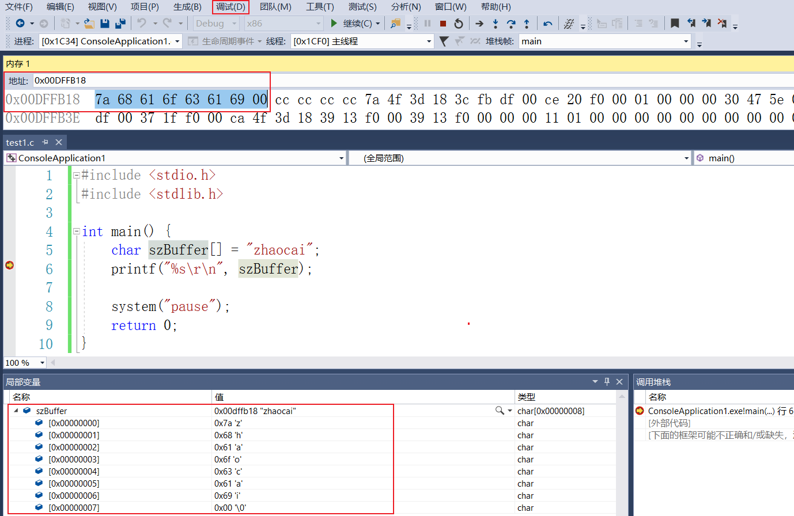
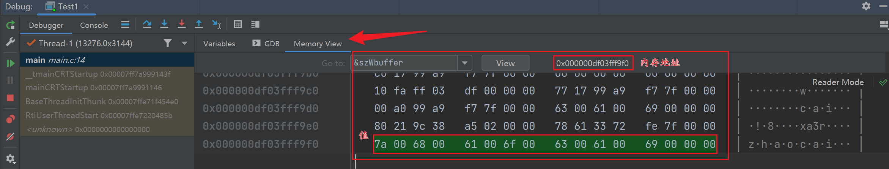
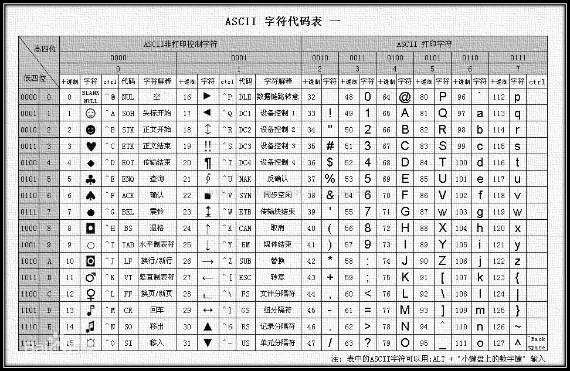

数据类型
| 序号 | 类型与描述 |
|---|---|
| 1 | 基本类型： 它们是算术类型，包括两种类型：整数类型和浮点类型。 |
| 2 | 枚举类型： 它们也是算术类型，被用来定义在程序中只能赋予其一定的离散整数值的变量。 |
| 3 | void 类型： 类型说明符 void 表明没有可用的值。 |
| 4 | 派生类型： 它们包括：指针类型、数组类型、结构类型、共用体类型和函数类型。 数组类型和结构类型统称为聚合类型。 |
整数
| 类型 | 存储大小 | 值范围 |
|---|---|---|
| char | 1 字节 | -128 到 127 或 0 到 255 |
| unsigned char | 1 字节 | 0 到 255 |
| signed char | 1 字节 | -128 到 127 |
| int | 2 或 4 字节 | -32,768 到 32,767 或 -2,147,483,648 到 2,147,483,647 |
| unsigned int | 2 或 4 字节 | 0 到 65,535 或 0 到 4,294,967,295 |
| short | 2 字节 | -32,768 到 32,767 |
| unsigned short | 2 字节 | 0 到 65,535 |
| long | 4 字节 | -2,147,483,648 到 2,147,483,647 |
| unsigned long | 4 字节 | 0 到 4,294,967,295 |
为了得到某个类型或某个变量在特定平台上的准确大小，您可以使用 sizeof 运算符。表达式 sizeof(type) 得到对象或类型的存储字节大小。下面的实例演示了获取 int 类型的大小：
#include <stdio.h>
#include <limits.h>
int main()
{
printf("int 存储大小 : %lu \n", sizeof(int));
return 0;
}
%lu 为 32 位无符号整数，详细说明查看 C 库函数 - printf()。
当您在 Linux 上编译并执行上面的程序时，它会产生下列结果：
int 存储大小 : 4
浮点类型
下表列出了关于标准浮点类型的存储大小、值范围和精度的细节：
| 类型 | 存储大小 | 值范围 | 精度 |
|---|---|---|---|
| float | 4 字节 | 1.2E-38 到 3.4E+38 | 6 位有效位 |
| double | 8 字节 | 2.3E-308 到 1.7E+308 | 15 位有效位 |
| long double | 16 字节 | 3.4E-4932 到 1.1E+4932 | 19 位有效位 |
头文件 float.h 定义了宏，在程序中可以使用这些值和其他有关实数二进制表示的细节。下面的实例将输出浮点类型占用的存储空间以及它的范围值：
#include <stdio.h>
#include <float.h>
int main()
{
printf("float 存储最大字节数 : %lu \n", sizeof(float));
printf("float 最小值: %E\n", FLT_MIN );
printf("float 最大值: %E\n", FLT_MAX );
printf("精度值: %d\n", FLT_DIG );
return 0;
}
%E 为以指数形式输出单、双精度实数，详细说明查看 C 库函数 - printf()。
void 类型
void 类型指定没有可用的值。它通常用于以下三种情况下：
| 序号 | 类型与描述 |
|---|---|
| 1 | 函数返回为空 C 中有各种函数都不返回值，或者您可以说它们返回空。不返回值的函数的返回类型为空。例如 void exit (int status); |
| 2 | 函数参数为空 C 中有各种函数不接受任何参数。不带参数的函数可以接受一个 void。例如 int rand(void); |
| 3 | 指针指向 void 类型为 void 的指针代表对象的地址，而不是类型。**例如，内存分配函数 void malloc( size_t size ); 返回指向 void 的指针，可以转换为任何数据类型。** |
字符串
字符串是使用空字符 \0 结尾的一维字符数组。因此，\0 是用于标记字符串的结束。空字符（Null character ）又称结束符，缩写 NUL，是一个数值为 0 的控制字符，\0 是转义字符，意思是告诉编译器，这不是字符 0，而是空字符。
char szString[8] = "zhaocai";
// 内存 7a 68 61 6f 63 61 69 00 （对应的是字母的 ascii 码）
// 可以对比一下 szBuffer[7] 和 szBuffer[8] 输出的区别。
char szBuffer[7] = "zhaocai"; // 会显示乱码
char *szBuffer = "zhaocai";
char site[8] = {'z', 'h', 'a', 'o', 'c', 'a', 'i', '\0'};
wchar_t szWbuffer[] = L"zhaocai";
C 编译器会在初始化数组时，自动把 \0 放在字符串的末尾。
字符串需要有结束符标识，数组需要自行添加结束符 \00。
调试 -- 窗口 -- 内存 -- 内存，就可以查看内存。

char1 字节wchar_t2 字节#include <stdio.h> #include <stdlib.h> int main() { // char 1 字节，wchar_t 2 字节 char szBuffer[] = "zhaocai"; // 7a 68 61 6f 63 61 69 00 wchar_t szWbuffer[] = L"zhaocai"; // 7a 00 68 00 61 00 6f 00 63 00 61 00 69 00 00 00 // 可以看大 wchar_t 每一个字符都是占两个字节的。7a 00 ... system("pause"); return 0; }
- 数组的名字就是首地址 == 指针
- strlen 计算字符串实际长度（没算结束符）
| 序号 | 函数 & 目的 |
|---|---|
| 1 | strcpy(s1, s2); 复制字符串 s2 到字符串 s1。 |
| 2 | strcat(s1, s2); 连接字符串 s2 到字符串 s1 的末尾。 |
| 3 | strlen(s1); 返回字符串 s1 的长度。 |
| 4 | strcmp(s1, s2); 如果 s1 和 s2 是相同的，则返回 0；如果 s1 |
| 5 | strchr(s1, ch); 返回一个指针，指向字符串 s1 中字符 ch 的第一次出现的位置。 |
| 6 | strstr(s1, s2); 返回一个指针，指向字符串 s1 中字符串 s2 的第一次出现的位置。 |
auto 类型（自动类型）
定义变量
关键字
auto ：声明自动变量
break：跳出当前循环
case：开关语句分支
char ：声明字符型变量或函数返回值类型
const ：声明只读变量
continue：结束当前循环，开始下一轮循环
default：开关语句中的“默认”分支
do ：循环语句的循环体
double ：声明双精度浮点型变量或函数返回值类型
else ：条件语句否定分支（与 if 连用）
enum ：声明枚举类型
extern：声明变量或函数是在其它文件或本文件的其他位置定义
float：声明浮点型变量或函数返回值类型
for：一种循环语句
goto：无条件跳转语句
if:条件语句
int： 声明整型变量或函数
long ：声明长整型变量或函数返回值类型
register：声明寄存器变量
return ：子程序返回语句（可以带参数，也可不带参数）
short ：声明短整型变量或函数
signed：声明有符号类型变量或函数
sizeof：计算数据类型或变量长度（即所占字节数）
static ：声明静态变量
struct：声明结构体类型
switch :用于开关语句
typedef：用以给数据类型取别名
unsigned：声明无符号类型变量或函数
union：声明共用体类型
void ：声明函数无返回值或无参数，声明无类型指针
volatile：说明变量在程序执行中可被隐含地改变
while ：循环语句的循环条件
bool
_Bool
&取地址符全局变量
全局变量是定义在函数外部，通常是在程序的顶部。全局变量在整个程序生命周期内都是有效的，在任意的函数内部能访问全局变量。
保存在内存的全局存储区中，占用静态的存储单元。因为全局变量存储在静态数据区。
在静态数据区，内存中所有的字节默认值都是 0x00
局部变量
在某个函数或块的内部声明的变量称为局部变量。它们只能被该函数或该代码块内部的语句使用。局部变量在函数外部是不可知的。
形参也是局部变量。
保存在栈中，只有在所在函数被调用时才动态地为变量分配存储单元。
静态变量（static）
只初始化一次：存储在静态数据区的变量会在程序刚开始运行时就完成初始化，也是唯一的一次初始化。
共有两种变量存储在静态存储区：全局变量和 static 变量，只不过和全局变量比起来，static 可以控制变量的可见范围，说到底 static 还是用来隐藏的。
常量变量（const）
const 是 constant 的简写，用来定义常量，它限定一个变量不允许被改变，产生静态作用。const 最开始推出的目的是为了取代预编译指令，取长补短。是
只读变量，且是在编译运行阶段使用的。const 允许指定一个语义约束，编译器会强制实施这个约束，允许程序员告诉编译器某值是保持不变的。
修饰普通类型变量
如果不想让编译器察觉到上面到对 const 的操作，我们可以在 const 前面加上 volatile 关键字。
volatile关键字跟 const 对应相反，是易变的，容易改变的意思。所以不会被编译器优化，编译器也就不会改变对 a 变量的操作。那么就可以通过取地址来改变变量的值。const int a = 7; int *p = (int*)&a; *p = 8;修饰指针变量
const 修饰指针变量有以下三种情况。【就近原则】
如果 const 后面是一个类型，则跳过最近的原子类型，修饰后面的数据**。**（原子类型是不可再分割的类型，如 int, short , char，以及 typedef 包装后的类型）
A: const 修饰指针指向的内容，则内容为不可变量。【值不可变】
const int *p = 8;B: const 修饰指针，则指针为不可变量。【指向的地址不可变】
int a = 8; int* const p = &a; *p = 9; // 正确 int b = 7; p = &b; // 错误C: const 修饰指针和指针指向的内容，则指针和指针指向的内容都为不可变量。【值和指向的地址都不可变】
int a = 8; const int * const p = &a;
参数传递和函数返回值
- 普通变量做为形参可以不用 const 修饰，毕竟传过来的只是值而不是内存地址。
- 参数为指针时，const 可以防止指针被意外篡改 。
对于临时对象的构造，需要调用构造函数，比较浪费时间，因此我们采取 const 外加引用传递的方法。
void Cmf(const Test& _tt)const 修饰内置类型的返回值，修饰与不修饰返回值作用一样。
- const 修饰自定义类型的作为返回值，此时返回的值不能作为左值使用，既不能被赋值，也不能被修改。
- const 修饰返回的指针或者引用，是否返回一个指向 const 的指针，取决于我们想让用户干什么。
修饰类成员函数
- const 修饰类成员函数，其目的是防止成员函数修改被调用对象的值，如果我们不想修改一个调用对象的值，所有的成员函数都应当声明为 const 成员函数。
- const 关键字不能与 static 关键字同时使用，因为 static 关键字修饰静态成员函数，静态成员函数不含有 this 指针，即不能实例化，const 成员函数必须具体到某一实例。
初始化局部变量和全局变量
局部变量被定义时，系统不会对其初始化，您必须自行对其初始化。
定义全局变量时，系统会自动对其初始化，如下所示：
| 数据类型 | 初始化默认值 |
|---|---|
| int | 0 |
| char | '\0' |
| float | 0 |
| double | 0 |
| pointer | NULL |
输入输出
格式化输入\输出
- %c 字符
- %s 字符串
- %d int
- %f double
- %e double
- %lld long long
- %x 十六进制
- %X 大写的十六进制整数
- %p 指针
- \ 转义字符
| 转义序列 | 含义 |
|---|---|
\\ |
\ 字符 |
\' |
' 字符 |
\" |
" 字符 |
\? |
? 字符 |
| \a | 警报铃声 |
| \b | 退格键 |
| \f | 换页符 |
| \n | 换行符 |
| \r | 回车 |
| \t | 水平制表符 |
| \v | 垂直制表符 |
| \ooo | 一到三位的八进制数 |
| \xhh . . . | 一个或多个数字的十六进制数 |
scanf 只能接收 4 字节，double 需要 8 字节，需要
%lf接收。scanf 错误：项目 - 属性 - C/C++ - 预处理器 - 预处理器定义 - 编辑。在最后一行加上
_CRT_SECURE_NO_WARNINGS4996 错误主要是使用了不安全函数造成的(高版本的 vs 会报错)
- 可以在预处理添加 1. _CRT_SECURE_NO_WARNINGS
也可以可以通过 在文件最开始位置添加，消除错误
#pragma warning(disable:4996)- 或者在项目创建的时候取消掉“安全开发生命周期检查”的选项

练习
前人栽树